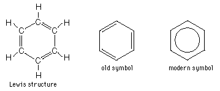

Benzene
|
Benzene is a clear, colorless liquid with a definite distinctive odor, the key constituent of the aromatic hydrocarbons. It was widely used as a solvent until it was determined to be carcinogenic. The older symbols below show it as a six-membered carbon ring with alternating double and single bonds.
|

The modern symbol implies the modern understanding that the double bonds are delocalized and shared by all the carbons in the ring.
|
Index
Carbon Compounds
Chemistry concepts
Reference
Shipman, Wilson, Todd
Sec 15.3 |